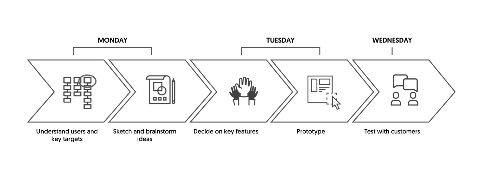
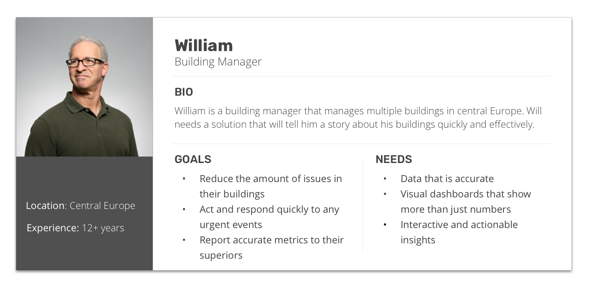
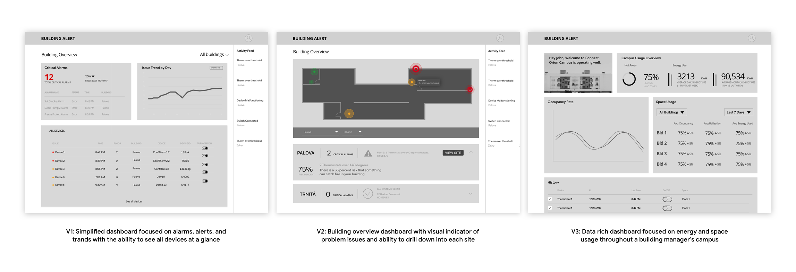

Building Alert is an IoT dashboard that gives building managers actionable insights into their buildings and devices. The dashboard allows managers to see their overall building performance as well as individual sites.
The product managers came to me with two main pain points they were hearing from customers:
Customers were complaining about data that was hard to understand
Customers felt like they couldn’t do anything with the dashboard and that it should be more interactive
GOALS
Improve the System Usability Scale score from 58 to at least 70
Improve the dashboard's aesthetics
SPRINT PROCESS
I only had three days to plan out the sprint because it was a busy time of the year for the team. I decided to consolidate the understand and sketch phases into Monday, make the big decisions and prototype on Tuesday, and leave Wednesday for testing.

DAY 1
WHAT'S ON YOUR RADAR?
Before the design sprint, I worked with our user reserach team on a persona based on user interviews we had conducted in the past. I presented the persona to the product team and hung it on the wall so we could keep our customer in our mind.

HOW MIGHT WE?
“How Might We” is a design framing exercise from the sprint methodology that takes the focus away from solutions and begins the dialogue for ideation. This was the most challenging activity in the sprint because the participants kept jumping to solutioning and I had to keep refocusing their attention on asking questions.
After the team wrote down all their notes from the customer feedback and “How Might We” activity, we began to sort the trends we were seeing. The key concepts that stuck out were: Richer insights, Actionable interface, Cleaner aesthetic, and Details at every level.
SKETCHES
To finish the day, we finally got to sketch a lot of the ideas people had on their mind. I wanted to stay out of this activity as much as possible and let everyone chicken scratch what was in their heads. As you can see on the right, some of the engineers started drawing architectural diagrams (naturally).
DAY 2
WHAT WILL WE BUILD?
To start off Tuesday, we picked apart everything we worked on from Monday and decided on what we will build. We put together guiding principles as well as features we wanted for the prototype.
WIREFRAMES
After reviewing the team's sketches, our guiding principles, and the features we wanted to include, I came up with three different versions of the Building Alert dashboard.

DAY 3
IT'S TIME TO TEST!
Earlier in the week, we gathered 6 of our customers that were already using the old dashboard. We conducted feedback tests using Validately, a user research tool, which allowed us to record and have many stakeholders dial-in.
After conducting the user tests, it was clear that our scrappy prototype had a lot of hiccups. One big pain point for our users was the lack of on boarding or tool tips provided. They wanted guidance around the application for the first time. They also wanted more information on what is happening behind the scenes in the platform.
After this long retrospective, our sprint finally came to an end!
IT'S A WRAP
LESSONS LEARNED
WHAT WORKED/DIDN’T WORK ABOUT THE SPRINT PROCESS?
From a design sprint perspective, the activity was invaluable for fostering creativity. From an engineering perspective, I wish we would have paid more attention to the technical limitations of the platform.
During the sprint, we often ignored or parked comments by engineering on complexity. This was a design sprint so we wanted to create something really cool to show our customers. We found out later how difficult some of these ideas would be to execute.
WAS IT A SUCCESS?
As far as our target goal, we improved the System Usability Scale score from 58 to 72 which took us from a below average or “Ok” score to above average and into the “Good” range. We realize that the previous score was a live dashboard and the post score was just a prototype but we thought it could act as “a finger to the wind”.
NEXT STEPS
We already started working on the detail view of the individual sites as you can see in the prototype below. We want to continue iterating on this experience and improve the System Usability Scale score to 80.